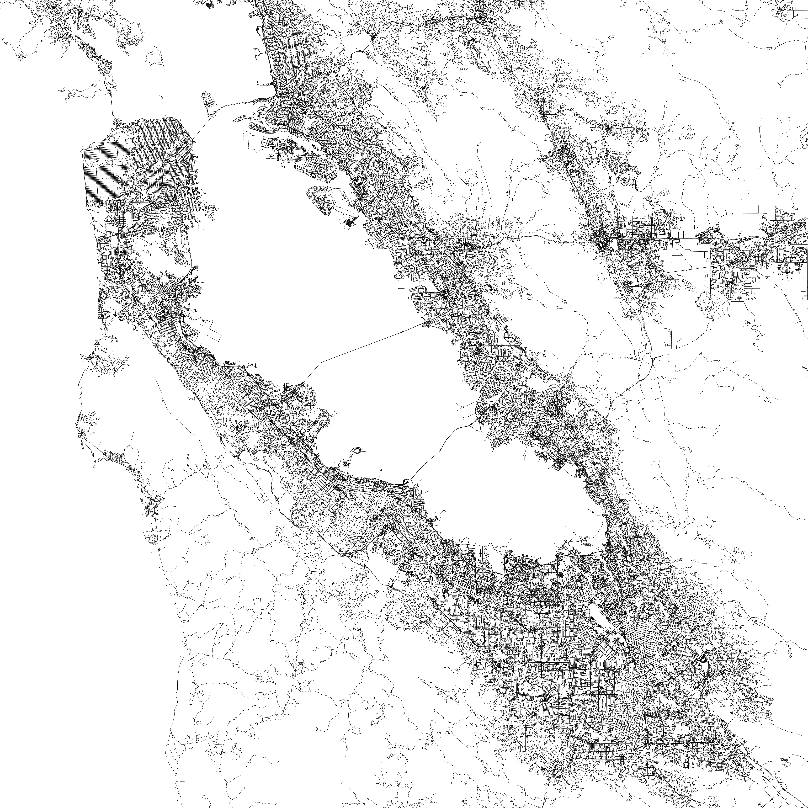
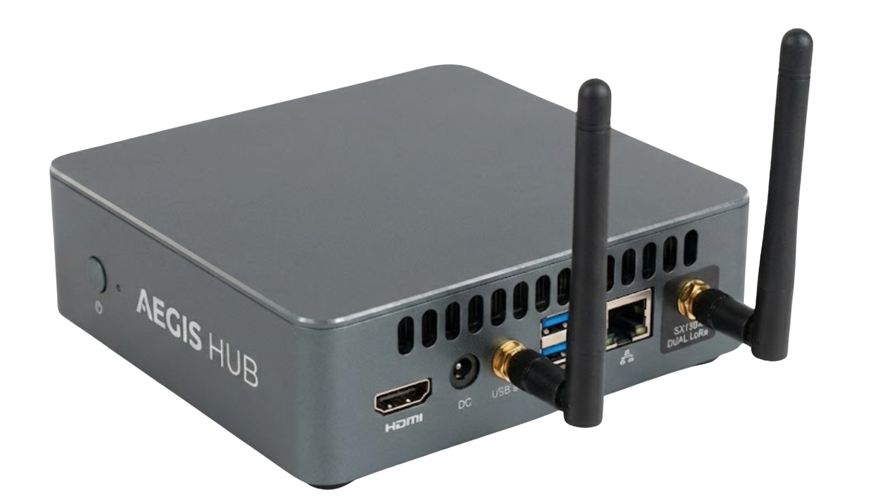

THE GRID IS
FRAGILE.
AEGIS FORGES UNBREAKABLE RESILIENCE.







Vitality Communications presents Aegis: A decentralized mesh network built for total infrastructure failure. We use long range radio and AES-256 encryption to keep people connected when towers and satellites are unavailable.
Major natural disasters prove that the initial event is rarely the only cause of death. The information blackout that follows prevents rescue and stops the coordination of food and water.
"In the 2011 earthquake, there was a complete communication gap. People could only wait. If the communication issue was resolved first, the food and water issues would have been resolved much sooner."
— Ryoma Yamamoto, Master of Communications and Computer Engineering, Kyoto University; Former Apple Pay Japan Lead
Standard communication relies on single towers. When a tower loses power or is physically destroyed, the entire network stops. This is a single point of failure that leaves civilians in the dark for weeks.
Centralized networks are primary targets for malicious activity. When a military or government unit relies on a fixed backbone, they share the vulnerabilities of the civilian grid. Tactical units require a terrestrial layer that works without external dependencies.
Aegis replaces cell towers with a distributed "Mesh." Every node acts as an encrypted relay for the others. If one part of the network fails, the signal simply finds a new path through the mesh.
Per Public Node
98% cheaper than cellular infrastructure.
A secure, encrypted fallback for units operating in environments where traditional communication backbones are compromised or intercepted.
Pre-deploying encrypted nodes on lamp posts creates a permanent emergency channel for citizens.
Teams drop repeaters as they move to extend the mesh into deep wilderness or urban dead zones.
Rapidly deploying comms in refugee camps or post-conflict zones where infrastructure has been destroyed.
Ryoma Yamamoto
Master of Communications and Computer Engineering, Kyoto University
Former Apple Pay Japan Lead
// STUDENT INNOVATION
Developed by students for the Conrad Challenge, we are currently field testing our fourth generation hardware. Vitality Communications is ready to present our findings.
Contact Our Team